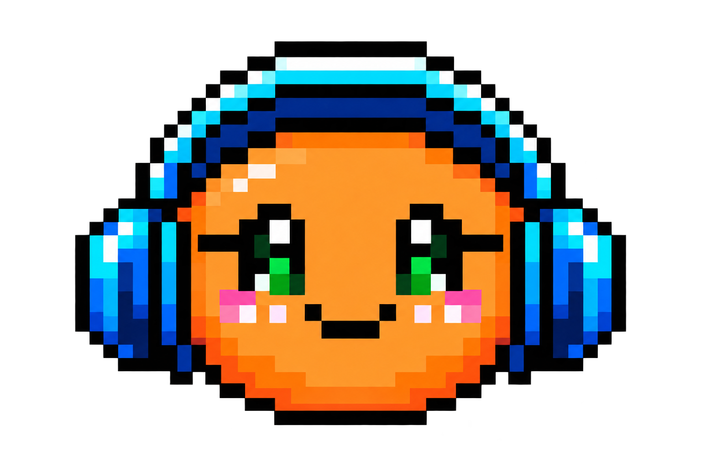
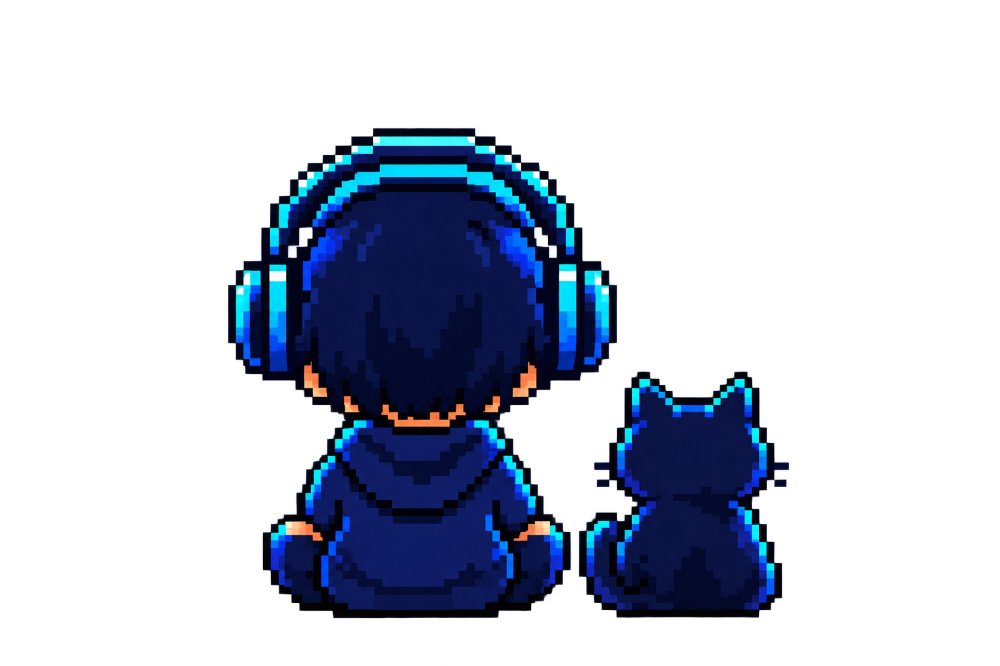

PLAYER / ARRANGER / CREATOR
わらびもち
楽器を弾く。音を重ねる。
分解して、組み直す。
8bitからバンドサウンドまで、好きな音を好きなかたちで。
埼玉生まれのマルチプレイヤー／アレンジャー。

ROOTS
音楽の原点
ジャズ、ファンク、ロック、フュージョンなど、さまざまな音楽が日常にあふれる家庭で育つ。8歳でクラシックピアノ、11歳でトロンボーンを経験。14歳のとき、ドラムを演奏する父と兄の影響からドラムセットに触れ、本格的に楽器へとのめり込んでいく。
学生時代は独学でドラムの練習に明け暮れながら、コピーバンドやライブハウスでのサポート演奏を経験。
MULTI PLAYER
ひとつの曲を、複数の楽器から見る
16歳のとき、動画サイトで目にしたマルチプレイヤーの演奏に衝撃を受ける。「自分でも、全部のパートを演奏してみたい」。そんな興味から、自宅にあったベースやエレキギターを手に取り、好きな楽曲を聴いては、それぞれのパートを耳コピする日々が始まった。
ドラムだけを聴くのではなく、ベースラインを追い、ギターのフレーズを拾い、コードや楽曲全体の構造を考える。ひとつの楽曲を、それぞれの楽器の視点から見る。この経験が、現在のアレンジや楽曲制作の原点になっている。
HISTORY
これまでの歩み
- クラシックピアノ
最初の楽器に触れ、音楽を演奏する楽しさを知る。
- トロンボーン
管楽器を通して、旋律とアンサンブルを経験する。
- ドラム
父と兄の影響でドラムセットに触れ、楽器へ本格的にのめり込む。
- マルチプレイヤーへ
ベースとエレキギターを手に取り、楽曲をパートごとに耳コピし始める。
- バンド活動とDTM
バンド活動を本格化し、DAWでの制作を開始。バンドやVOCALOIDのオリジナル曲を通じて、作詞・作曲・編曲を身につける。
- 8bitアレンジの投稿開始
音楽活動から離れた期間を経て、病気をきっかけに再始動。8bitアレンジの動画投稿を始める。
ARRANGEMENT
音を分解し、もう一度組み立てる

楽曲制作では、ルーツであるドラムを中心に、ベース、ギター、キーボードなども自身で演奏。それぞれのパートを多重録音し、一人でバンドサウンドを組み上げるスタイルを得意とする。
現在取り組んでいるのは、限られた音数で楽曲を再構築する8bitアレンジ。原曲を聴き込み、メロディ、ベース、リズムをひとつずつ分解し、限られた音の中でもその楽曲らしさが残るように組み直す。
「この曲を、自分ならどう鳴らすか。」
たくさんの音を重ねるバンドサウンドと、限られた音でつくる8bitサウンド。一見正反対のふたつも、自分にとっては同じ「アレンジ」という音楽の楽しみ方だ。
楽器やジャンルにとらわれず、
今日も音をつくっていく。
FAVORITE GENRES